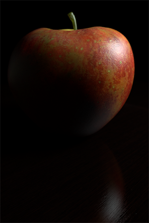
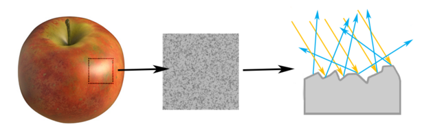
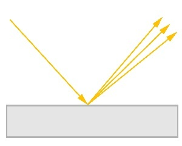
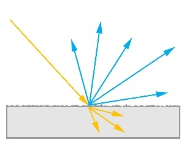
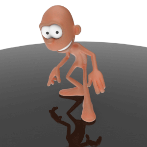

Understanding Physically Based Rendering in Arnold

Designing materials based on physical laws can tremendously simplify shading and lighting, even when we do not necessarily strive for realism or physical accuracy. By understanding and applying a few principles, we can make images that are more believable, and create materials that behave more predictably in different lighting setups.
In modern renderers, physically based rendering refers to concepts like energy conservation, physically plausible scattering and layering in materials and linear color spaces. Arnold is a physically based renderer, but it also lets you break the rules and create materials and lights that do not obey the laws of physics if you wish. In this document, we'll explain the underlying theory and how to set up your shaders to follow these principles.

Arnold supports various third party applications such as Substance Painter.
Photons and Scattering
In rendering we simulate photons emitted from lights, traveling through the air and bouncing off surfaces and through volumes, eventually ending up on a camera sensor. The combination of millions of photons on the camera sensor then forms the rendered image.
This means that from a physics point of view, surface shaders describe how the surface interacts with photons. Photons hitting an object can be absorbed, reflect off the surface, refract through the surface, or scatter around inside the object. The combination of these components results in a wide variety of materials.
Energy Conservation
Unless an object is a light source that emits photons, it can't return more energy than is being contributed by the incoming light. For a material to be energy conserving the number of photons leaving the surface should be smaller or equal to the number of incoming photons. If a material is not energy conserving, materials will appear overly bright and render with increased noise, especially when using global illumination.
To keep materials energy conserving, the weight and color of material components should never exceed 1. Further, we must be careful to ensure that the combination of all components is energy conserving, which we'll explain in detail later.

Materials
At the microscopic level, object surfaces are intricately detailed. For rendering, we do not use geometry to represent all of this detail, but rather use statistical models that have easy to understand parameters.
Arnold's Standard Surface shader models objects with one or two specular layers, and a diffuse or transparent interior. This model can represent a wide variety of materials. Let's look at the individual components.
Diffuse and Subsurface Scattering
First, consider the diffuse interior. Incoming photons will enter the object, scatter around inside and either get absorbed or leave the object at another location.
If photons scatter many times, we get a diffuse appearance, due to photons leaving the surface in many different locations and directions. For materials like skin, photons can scatter relatively far under the surface giving a very soft appearance, which we render with subsurface scattering. For materials like unfinished wood, photons do not scatter very far which gives a harder appearance, and we render these as diffuse. For thin objects like leaves, the photons can scatter all the way to the other side of the object, which we render as diffuse SSS with thin_wall enabled.
Note that fundamentally all of these types of materials have the same underlying physical mechanism, even though we provide separate controls for them in the shader.
The diffuse interior also typically has the biggest influence on the overall color of the material. Each photon has an associated wavelength, and depending on the properties of the material some photons with some wavelengths are more likely to be absorbed than others. This, in turn, means that photons with some wavelengths are more likely to leave the surface, which will give it a colored appearance.

The skin of a red apple mostly reflects red light. Only the red wavelengths are scattered back outside the apple skin, and the others are absorbed by it.
Energy Conservation
A single photon can only participate in one of the diffuse, subsurface scattering and backlighting components, for physical correctness we do not want more photons leaving the surface than entering. For Standard Surface, it is automatically ensured that the sum of these components is not higher than 1.
Specular Scattering

Roughness
The specular layer is modeled using a microfacet distribution. We assume that the surface consists of microscopic faces oriented in random directions. A surface with low roughness such as a mirror will have little variation between the faces, resulting in sharp reflections. With high roughness there will be a lot of variation resulting in softer, glossy reflections.
A strong Specular highlight is visible on the apple. Note the table's specular reflection which is broad and dull (high Specular Roughness value).
Rough reflections caused by scattered light rays
Glossy surface. Angle of incidence and reflection are equal.
Diffuse surface. Ray direction varies randomly.
Roughness Map
To get variation in the highlights of the surface, a map should be connected to the Specular Roughness. This will influence not only the brightness of the highlight but also it's size and the sharpness of the environmental reflection.

Low Specular Roughness

High Specular Roughness
'Scratches' texture connected to Specular Roughness (via Range shader)

Transmission
Photons can not only be reflected off the surface, but can refract through it as well. Photons will pass through the specular layer, typically changing direction when exiting on the other side of the layer, controlled by the index of refraction (IOR).
If the interior of the surface is transparent, such as for clear glass, then photons can pass through the object and exit on the other side. If there is a diffuse interior, the photon can scatter inside the object and get absorbed or exit the object again. The more refractive the specular layer, the more the underlying diffuse interior will be visible. For materials like metals, photons refracting through the specular are often immediately absorbed, and so the diffuse interior is not visible.
Fresnel
The percentage of photons reflected or refracted by the specular layer is view dependent. When looking at surfaces head on, most light is refracted, while at grazing angles most light is reflected. This is called the Fresnel effect. The index of refraction controls exactly how this effect varies with the viewing angle.
Variation of a Specular BRDF with respect to the view direction
Opacity and Transmission
Opacity is best understood as a way to model surface geometry using textures. It does not affect how photons interact with the surface, but rather indicates where the surface's geometry is absent and the photons can pass straight through.

Ramp texture connected to the opacity
A typical use for opacity would be a sprite type of effect, such as cutting out the shape of a leaf from a polygon card or making the tips of hair strands transparent. Be warned however that scenes containing many opacity sprites (for example tree leaves) can slow down rendering considerably.

Leaf Opacity: Enabled

Leaf Opacity: Disabled

Alpha map connected to Opacity
Transmission depth is similar, but rather than the surface it controls the density of the object interior. Denser volumes will absorb more photons as they pass through the interior, making the object darker where it is thicker.
Transmission Color: White
Transmission Color: light blue